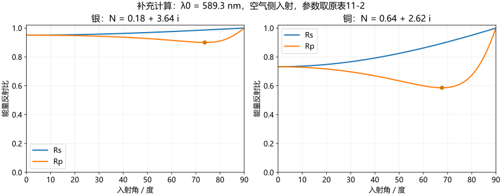

35 怎样读金属反射比的表格与曲线
完整保留七种金属数据与两张原曲线，区分波长扫描、角度扫描和模型复算。
同是金属镜面，为什么反射的颜色不同？
金属对不同波长的反射比例可以不同；改变入射角时，s、p分量的比例也会分别变化。P6同时放了“固定波长的材料表”“波长曲线”“角度曲线”，三个横向比较不能混为一个实验。

表11-2：固定589.3 nm、正入射

下表前三个数值列均按原图转录；末列是补充复算，额外采用空气侧入射、均匀非磁半无限介质模型： 。原表的第二个光学常数是
。原表的第二个光学常数是 ，不是
，不是 本身。
本身。
| 原表金属 | n | K=nκ | 原表ρ | 补充复算R |
|---|---|---|---|---|
| 银 | 0.18 | 3.64 | 0.95 | 0.95083 |
| 金 | 0.37 | 2.82 | 0.85 | 0.84943 |
| 铝 | 1.44 | 5.23 | 0.83 | 0.82706 |
| 水银 | 1.62 | 4.41 | 0.73 | 0.75373 |
| 铜 | 0.64 | 2.62 | 0.70 | 0.73205 |
| 镍（蒸发的） | 1.30 | 1.97 | 0.43 | 0.43299 |
| 铁（蒸发的） | 1.51 | 1.63 | 0.33 | 0.32567 |
水银与铜的原表反射比和所列 按上述模型算出的值差约0.024、0.032，不能由表面两位小数的简单四舍五入解释。原表没有交代更多测量条件、表面状态或数据整理依据，因此保留原值和复算值，并列出差异，不依据复算改写原表。表中镍0.43、铁0.33等差别也说明，不能认为金属在任意条件下都具有很高的反射比。
按上述模型算出的值差约0.024、0.032，不能由表面两位小数的简单四舍五入解释。原表没有交代更多测量条件、表面状态或数据整理依据，因此保留原值和复算值，并列出差异，不依据复算改写原表。表中镍0.43、铁0.33等差别也说明，不能认为金属在任意条件下都具有很高的反射比。
图11-23：改变波长，哪些光被较强地反射？

原图包含Ag（银）、Au（金）、Cu（铜）、Al（铝）、Rh（铑）五条标记。每条曲线表示同一金属的反射比随波长变化：金、铜在较短可见波段的反射比相对低、较长波段较高；银在图示较长波段较高，在紫外附近出现明显低谷；铝总体较高但也有局部变化；铑随波长增长呈上升趋势。对曲线靠近或相交的细节，以放大的原图为准，模糊处不读取精确阈值。
补充解释：白光照射时，反射光谱是入射光谱乘以 ，肉眼颜色还取决于光源和视觉响应。因此这张图能解释金、铜为何可能呈选择性反射颜色，但只凭某一点的R还不能确定反射光的颜色。原图没有给膜厚、制备方法和全部测量条件，这些曲线不能直接作为任意现代样品的精确材料数据。
，肉眼颜色还取决于光源和视觉响应。因此这张图能解释金、铜为何可能呈选择性反射颜色，但只凭某一点的R还不能确定反射光的颜色。原图没有给膜厚、制备方法和全部测量条件，这些曲线不能直接作为任意现代样品的精确材料数据。
图11-24：固定条件下改变入射角

图中银、铜均有两条偏振分量：正入射时各自的s、p反射比相等；随角度增大，s分量上升，p分量先降后升并出现非零极小值；掠入射趋近1。对应角常称“伪布儒斯特角”（补充术语），只表示Rp最小，并不表示Rp为零。原备注也在强调p分量的极小值不为零，因此这里没有透明电介质那种反射p分量完全消失的起偏角。
这不表示反射光完全不会改变偏振。自然光反射后通常会因 而成为部分偏振光；原备注“不会产生全偏振”的讨论不能扩大成“不会起任何偏振作用”。本图未标出所用波长，正入射起点也与589.3 nm表格不同，因此不能将这张曲线与该表当作同一组数据比较。
而成为部分偏振光；原备注“不会产生全偏振”的讨论不能扩大成“不会起任何偏振作用”。本图未标出所用波长，正入射起点也与589.3 nm表格不同，因此不能将这张曲线与该表当作同一组数据比较。

表格检验固定条件的数量关系，波长曲线讨论频谱选择，角度曲线讨论偏振选择。模平方只说明能流比例；偏振椭圆还需要相位，留到下一课。